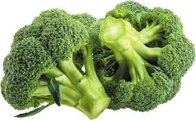
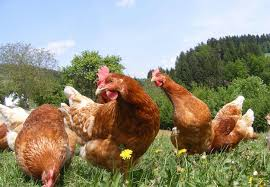
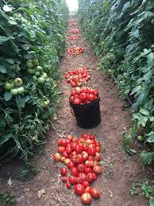
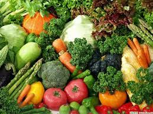
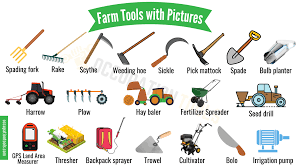
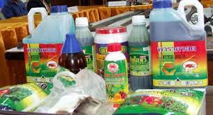
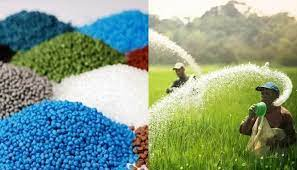

A revolutionary platform connecting farmers and buyers.
You do not want to miss the adventure.
At agrimarket, we are dedicated to empowering farmers with the best resources and solutions. Our commitment to sustainability, quality, and innovation sets us apart as your preferred partner in agriculture. Explore our offerings and embark on a journey towards a prosperous and bountiful harvest.
Visit agrimarketHome for all your agrisolutions
Welcome to agrimarket, your one-stop destination for all your agricultural needs. Explore our comprehensive range of high-quality farm crop and animal products, cutting-edge farm equipment, and essential farm inputs to elevate your farming experience.
 Quality is our priority...YOU are our priority.
Discover a diverse array of farm crop and animal products, carefully curated to meet the demands of modern agriculture. From fresh, locally sourced produce to premium-grade animal products, we take pride in offering you the best nature has to offer. Our commitment to quality ensures that you receive nutritious and wholesome products for your family and customers.
 Immerse yourself in the world of agriculture with our exceptional farm crops and animal products. Experience the taste of fresh, organic fruits and vegetables grown with care and dedication. Our range of animal products includes premium meats, dairy, and more, all sourced from responsibly raised livestock. Delight in the flavors of nature brought to your table.
Upgrade your farming operations with our state-of-the-art farm equipment. Explore a wide selection of machinery designed to enhance efficiency and productivity on your farm. Whether you're a small-scale farmer or manage large agricultural estates, our equipment is tailored to meet your specific needs. Elevate your farming practices with reliable and innovative machinery.
Ensure the success of your crops with our premium farm inputs. Browse through our selection of farm chemicals, fertilizers, seeds, and more. Our carefully curated inputs are designed to optimize soil health, promote robust plant growth, and maximize your yield. Choose from trusted brands and proven solutions to nurture your crops from planting to harvest.
 In the heart of every seed, Stephen saw a field of possibilities. From that vision, Agrimarket emerged—a digital sanctuary empowering farmers to sow the seeds of innovation and reap a harvest of collective success.
Meet Stephen Karanja, a dedicated farmer with a dream to transform agriculture. Tired of the struggles farmers faced, he envisioned an Agrimarket—a digital haven for farmers like herself.
Driven by passion, Steve gathered a team to create a platform that's more than a marketplace. It's a community where farmers trade, share knowledge, and thrive together.
Agrimarket is Steve's brainchild, uniting farmers, providing resources from inputs to equipment, and celebrating the spirit of farming. Join Stephen's journey—where one idea blossoms into a harvest of innovation and unity. Agrimarket: Grow together, thrive together.
This project is a Portfolio Project for Holberton School.
Connect with the team:
GitHub Repository